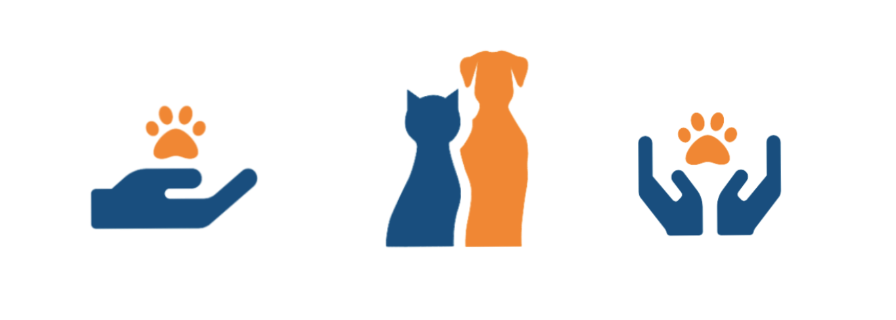

Conclusion
Across the board, communication seems to be an expected hardship amongst shelters, this problem is not exclusive to Lifeline. We feel that this means more animals end up stuck in a shelter and don't make it to a loving home. We want to improve these odds by helping the shelters with their user communications as well as their inter organization communications to help with information sharing and providing animals a quick and easy transition out of the shelter. Volunteers become discouraged when the shelter is unresponsive, so we wanted to provide that connection in an easier format to insure the longevity and health of all the animals cared for at Lifeline. Future exploration into the below features would continue to improve the efficiency of getting volunteers, finding and meeting with the animals, and provide good resources for the volunteers to better care for the animal in their possession.
- Virtual orientation
- Self led with videos
- Interactive, in-app face to face virtual meetings while fostering and post adoptive check-ins
- Expand to more shelters
- In app Messaging
We are proud to be a part of the effort to save lives both human and furry, pairing people to their animal friends so each may have a fulfilled life.
